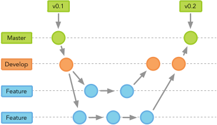

Continuous Integration
Continuous Integration
Retreat Talk 2017
Julian Späth
Content
Continuous Integration
What is CI?
Benefits of CI
Continuous Integration at QBiC
Tools
Dependency Resolvement
Auto-Deployment
Future thoughts
Discussion
Continuous Integration
What is CI?
Using version control with a branching workflow

What is CI?
Using version control with a branching workflow
Automating build and testing of code
Benefits of CI
Automatization
Minimize the manual tasks
Consistency in build and deploy
Workflows between environments
Development - Testing- Production
Enables continuous delivery
Continuous Integration at
Tools
Version Control System
Build Management System
Automation Server
Automated Dependency Resolvement
Automated Dependency Resolvement
https://www.sonatype.com/nexus-repository-sonatype
Auto-Deployment
Auto-Deployment
Future Thoughts
Discussion


 Version Control System
Version Control System  Build Management System
Build Management System Automation Server
Automation Server